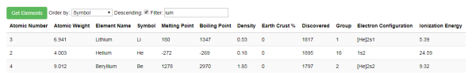

This is a tutorial for those interested in a quick introduction to AngularJS and REST API. We will build the familiar Periodic Table of the Elements found in every chemistry textbook, and allow the user to select a Chemical Element by clicking on its symbol to display its properties. It is assumed the reader is familiar with JavaScript, ASP.NET MVC, C#, Entity Framework, HTML, JSON, and CSS. I built this with VS 2015, NET 4.5.2, and Windows 7
My objective with this project was to introduce AngularJS and REST API in a simple application that demonstrated the basic principles. If you've made it this far, you probably already know that AngularJS is a JavaScript-based open-source front-end web application framework. You are also probably familiar with the MVC Pattern. This introduction is not intended to be comprehensive as there are numerous sources of information on AngularJS and REST API on the web, some of which I have provided a link for. For example, Rahul Rajat Singh has a good series of articles on AngularJS.
This should create a single database table called Elements using the Entity Framework Code First Model. It will also populate the table with the first 50 Chemical Elements. (I'll provide the remaining elements in the future.) If you are unable to create the Elements table using Entity Framework, I've provided a file called CreateElementsTable.sql you can use to create the table manually. Press F5 to run the ElementsAPI project in debug mode. You might want to place a breakpoint in this key portion of the C# code, the controller, in ElementController.cs. This is the REST API to fetch a single element from the Elements table. (For simplicity, I've made the ID in the database the same as the Atomic Number of the element.)
[Route("api/Element/{id}")]
[HttpGet]
public Element Get(int? id)
{
List elements = dbContext.Elements.ToList();
var element = dbContext.Elements.Find(id.Value);
if (element == null)
{
return null;
}
return element;
}
When the ElementsAPI project is running, if you have the curl utility installed, you can execute the API like this: curl -X GET http://localhost:64227/api/Element/1
Note that we have included the id of 1 at the end of the URL and thus are fetching the first element from the database. (The "64227" in the API is simply the port id and is set via the Project URL in the
project's properties.) You should get this JSON as response:
{"ID":1,"AtomicNumber":1,"AtomicWeight":1.008,"Name":"Hydrogen","Symbol":"H","MeltingPoint":-259.0,"BoilingPoint":253.0,"Density":0.09,
"EarthCrustPerCentage":0.14,"Discovered":"1776","Group":1,"ElectronConfiguration":"1s1","IonizationEnergy":13.6}
In Windows explorer, right-click on PeriodicTableOfElements.html, and select "Open With Chrome." (You might also want to open Chrome's "Developer Tools" window in order to see any error messages.) The page should appear like the image above, consisting essentially of a button for each Chemical Element. Clicking on one of them, Carbon for instance, will display various properties about the Element (the Atomic Mass, Melting Point, Density, and so on).
This is the heart of this project and where we get to see AngularJS in action. (Thanks to Rahul Rajat Singh for his article on modules and controllers.) The file app/app.js simply contains an IIFE (Immediately Invoked Function Expression), a JavaScript function that runs as soon as it is defined.
(function(){
myModule = angular.module('myAngularApplicationElements', []);
}())
Note the name of the module, myAngularApplicationElements, which is specified in the HTML tag of PeriodicTableOfElements.html to "wire-up" our html and AngularJS:
<html ng-app="myAngularApplicationElements>
In that line of html, ng-app is an AngularJS directive to auto-bootstrap our application.
The file app/elements/elementsController.js is where things get interesting. This is our AngularJS controller, a JavaScript object that specifies the data to be used in the view.
In our html we specify the controller using the ng-controller directive:
<body ng-controller="elementsController">
The JavaScript method fetchElement is what gets called when we
click on a button. In the HTML we use the AngularJS ng-click directive to invoke the fetchElement method, passing in the database ID:
<input type="button" ng-click="fetchElement(1)">
$scope is the AngularJS directive that can be thought of as a "glue" between the controller and the view.
Here is the fetchElement controller, where we invoke a method called remoteElementsService.fetchElement(id) (discussed in a moment) to fetch the data
from the database and assign it to $scope.
$scope.fetchElement = function (id) {
remoteElementsService.fetchElement(id)
.success(function (data, status, headers, config) {
$scope.singleElement = data;
})
.error(function (data, status, headers, config) {
$scope.singleElement = null;
$scope.error = "Failed to retrieve item from server: id=" + id;
});
};
The remoteElementsService.fetchElement(id) in the above JavaScript method is encapsulated in an AngularJS service in
app/elements/remoteElementsService.js. Separating the service from the controller in this way allows
the service to be reused by other parts of the code if needed. The key part is an AngularJS pre-defined service called $http.
It does the "heavy lifting" of invoking the API in the ElementsAPI ASP.NET MVC code above . In the service, the method is called _fetchElement,
with the leading underscore, which will be explained shortly.
var _fetchElement = function (id) {
return $http.get('http://localhost:64227/api/Element/' + id);
};
Note that in the service the method is called _fetchElement (with the leading underscore), but when we call it from the controller we call fetchElement
(with no leading underscore). This is the result of using a JavaScript pattern called the Revealing Module Pattern.
You can see this at the end of app\elements\remoteElementsService.js:
return {
fetchElements: _fetchElements,
fetchElement: _fetchElement
};
The data that is returned from the controller is placed in $scope.singleElement, which in turn is displayed in PeriodicTableOfElements.html
within the set of double curly braces known as AngularJS templates, like this: {{ singleElement.ID }}
Let's look at an example. If you hover over the He button in the upper right-hand corner of the table of Elements, the name of the element, "Helium" is displayed.
When we click the button, the AngularJS controller calls the AngularJS service, which in turn invokes the ElementsAPI ASP.NET MVC code above .
In the image below, we can see the results.
In addition to the API to retrieve a single Element by its ID, there is also an API to fetch all the Elements in the database table in ElementController.cs.
[Route("api/Element")]
[HttpGet]
public IEnumerable Get()
{
var elements = dbContext.Elements.ToList().OrderBy(s => s.AtomicNumber);
return elements;
}
There is a corresponding fetchElements (note the plural) method in elementsController.js that fetches all the data returned from the service into $scope.elements.
var elementsController = function ($scope, $filter, remoteElementsService) {
$scope.fetchElements = function () {
remoteElementsService.fetchElements()
.success(function (data, status, headers, config) {
$scope.elements = data;
})
.error(function (data, status, headers, config) {
$scope.elements = null;
$scope.error = "Failed to retrieve item from server: id=";
});
};
Likewise there is a _fetchElements (note the plural and leading underscore) method in remoteElementsService.js which invokes the API in the ElementsAPI ASP.NET MVC code above:
var _fetchElements = function () {
return $http.get('localhost:64227/api/Element');
};
Again, the leading underscore in the name _fetchElements is the result of using a JavaScript pattern called the Revealing Module Pattern,
where you can see this at the end of app\elements\remoteElementsService.js:
return {
fetchElements: _fetchElements,
fetchElement: _fetchElement
};
In the html file, note the ng-repeat directive to iterate over all the items of the collection.
<tr ng-repeat="singleElement in elements | orderBy: (isOrderDescending == true ? '-': '') + orderByField | filter:filterString">
The | orderBy: and | filter:filterString are AngularJS filters which, as the names suggest, select only
the database records that contain the filterString, and orders them alphabetically based on the orderByField.
And as with the case where we returned a single row from the database, we display the fields by using the set of double curly braces like this: {{ singleElement.ID }}
Let's look at an example. In the image below, we have selected all the elements in the database by clicking the "Get Elements" button, and then filtered on the ones that contain the string "ium"
(many have been omitted for clarity!)

I hope this article gives you a feel for what you can do with AngularJS. Try adding some functionality to this project, and if you come up with something
you would like to share, put it in the comments below. As an example, the 10 buttons labelled "Alkali Metal", "Alkaline Earth", and so on,
only serve as a color key for the buttons in the table. In other words, they currently have no action associated with clicking them. A good exercise would be to give them
some action by using the ng-click directive, and then writing some code in the JavaScript controller, perhaps a pop-up with a description of what an "Alkali Metal" is.
Version 1.0.0.0